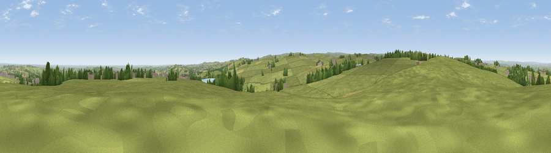

Viewpoint near Birds Edge
#15170 in England · top 21% of its area beats it · near Birds EdgeThe view, rendered

A 360° render of this exact spot computed from the terrain model, tree cover and land cover — summer colours, afternoon light, calibrated against photographs of famous viewpoints. Real trees, hedges and buildings will differ in detail.
The panorama
Grey silhouette: terrain skyline in each direction (720 bearings, Earth curvature and refraction included). Dashed green: skyline with trees (+15 m) and buildings (+8 m) as obstacles. Blue strip: how far the ground is visible on each bearing.
Where the view opens
Wedge length = distance to the farthest visible ground on that bearing (vegetation-aware). Rings at 10, 25 and 50 km.
What fills the view
80% grassland · 8% woodland · 7% cropland · 4% built-up ·
Angular shares of the visible panorama (visual magnitude), not map area. Landscape diversity 0.32 (0–1 Shannon).
Key numbers
More beautiful places nearby
The staircase of upgrades: each row has a higher view potential than everything closer. Driving times are estimates from straight-line distance, calibrated against real road routing — check an actual route before setting out.
| Place | Direction | Drive | Score |
|---|---|---|---|
| Viewpoint near Jackson Bridge | W · 3 km | ~6 min | 73.5 |
| Viewpoint near Wharncliffe Side | SE · 15 km | ~27 min | 75.0 |
| Viewpoint near Wharncliffe Side | SE · 15 km | ~27 min | 75.2 |
| Viewpoint near Greenfield | WSW · 21 km | ~35 min | 76.0 |
| Viewpoint near Carrbrook | WSW · 22 km | ~37 min | 77.1 |
| Viewpoint near Otley | N · 37 km | ~56 min | 77.5 |
| Darwen Hill | WNW · 54 km | ~76 min | 80.7 |
| White Brow | W · 54 km | ~76 min | 82.9 |
53.55990, -1.69388 · source: screening · position refined by local search. Computed location — check access rights before visiting.